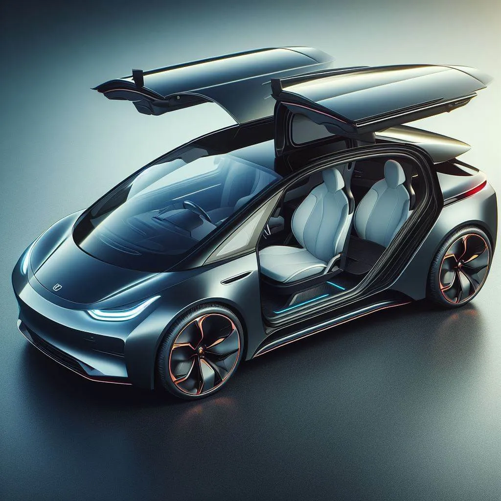

Ich lese und höre immer wieder Beschwerden von älteren Menschen über Elektroautos oder batterieelektrische Fahrzeuge (BEVs) im Allgemeinen. Sie bevorzugen ihre Benzin- oder Dieselautos, die ich als ICE — Internal Combustion Engine (Verbrennungsmotor) — abkürzen werde.
Dieser Artikel listet alle Gründe auf, warum ich glaube, dass wir einen allmählichen Anstieg des Anteils von Elektrofahrzeugen erleben werden, bis sie den Markt vollständig dominieren und mehr als 90 % aller Autos auf den Straßen in Deutschland bis 2060 ausmachen.
Warum 2060? Weil ab 2035 in der EU gesetzlich keine neuen Verbrennerautos mehr verkauft werden dürfen, und ich schätze, dass es etwa 25 Jahre dauert, bis die vorhandenen Autos ersetzt sind.
e-Autos sind günstiger 💸
Die Betriebskosten sind niedriger, weil die Motoren viel effizienter sind. Ein BEV benötigt 97–198 Wh/km (Quelle), während der VW Arteon 2024 4 Gallonen / 100 Meilen (9,4 L/100 km, Quelle) verbraucht. Ich zahle derzeit 0,26 €/kWh bzw. 1,63 €/L Benzin in Deutschland. Das bedeutet, dass der Tesla 3 0,025 €/km kostet und der VW Arteon 0,15 €/km. Anders ausgedrückt: Ein BEV kann 600 Meilen für den Preis von 100 Meilen eines ICE fahren.
Zusätzlich sind die Steuern für den Besitz eines BEV niedriger und die Versicherung ist etwa 25 % günstiger, da es weniger Schäden gibt (Quelle).
Typischer Verbrauch
| Kategorie | BEV (Verbrauch, Modell) | Benziner (Verbrauch, Modell) | Diesel (Verbrauch, Modell) | Wasserstoff (Verbrauch, Modell) |
|---|---|---|---|---|
| Kleinstwagen | 14.1 kWh/100 km (VW up!) |
5.4 L/100 km (VW up!) |
5.2 L/100 km (VW up!) |
N/A |
| Kleinwagen | 19.0 kWh/100 km (Renault Zoe) |
6.2 L/100 km (VW Polo) |
5.8 L/100 km (VW Polo Diesel) |
N/A |
| Kompaktklasse | 16.7 kWh/100 km (VW ID.3) |
7.6 L/100 km (VW Golf) |
4.8 L/100 km (VW Golf 2.0 TDI SCR Life) |
N/A |
| Mittelklasse | 17.2 kWh/100 km (Tesla Model 3) |
9.3 L/100 km (BMW 3er) |
5.1 L/100 km (BMW 3er Diesel) |
1.2 kg/100 km (Hyundai Nexo) |
| Obere Mittelklasse | 19.5 kWh/100 km (BMW i4) |
9.8 L/100 km (Audi A6) |
6.5 L/100 km (Audi A6 Diesel) |
N/A |
| Oberklasse | 21.5 kWh/100 km (Mercedes EQS) |
8.7 L/100 km (Mercedes S-Klasse) |
8.2 L/100 km (Mercedes S-Klasse) |
N/A |
| Geländewagen/SUV | 22.4 kWh/100 km (Audi Q4 e-tron) |
11.1 L/100 km (BMW X5) |
7.8 L/100 km (BMW X5 Diesel) |
N/A |
Die folgende Tabelle zeigt wie viel man bei einem e-Auto spart, wenn man 100km fährt und nicht mit einem Benziner. Das ganze ist natürlich vom Strom- und vom Benzinpreis abhängig. Angenommen wird ein Verbrauch von 9.3L Super auf 100km sowie von 17.2kWh auf 100km:
| €/L Benzin | 0.20€/kWh (3.44€/100km) |
0.30€/kWh (5.16€/100km) |
0.40€/kWh (6.88€/100km) |
0.50€/kWh (8.60€/100km) |
0.60€/kWh (10.32€/100km) |
|---|---|---|---|---|---|
| 1.25 €/L (11.62 €/100km) |
8.19€ | 6.47€ | 4.75€ | 3.03€ | 1.31€ |
| 1.30 €/L (12.09 €/100km) |
8.65€ | 6.93€ | 5.21€ | 3.49€ | 1.77€ |
| 1.35 €/L (12.56 €/100km) |
9.12€ | 7.40€ | 5.68€ | 3.96€ | 2.24€ |
| 1.40 €/L (13.02 €/100km) |
9.58€ | 7.86€ | 6.14€ | 4.42€ | 2.70€ |
| 1.45 €/L (13.49 €/100km) |
10.05€ | 8.33€ | 6.61€ | 4.89€ | 3.17€ |
| 1.50 €/L (13.95 €/100km) |
10.51€ | 8.79€ | 7.07€ | 5.35€ | 3.63€ |
| 1.55 €/L (14.42 €/100km) |
10.98€ | 9.26€ | 7.54€ | 5.82€ | 4.10€ |
| 1.60 €/L (14.88 €/100km) |
11.44€ | 9.72€ | 8.00€ | 6.28€ | 4.56€ |
| 1.65 €/L (15.35 €/100km) |
11.91€ | 10.19€ | 8.46€ | 6.75€ | 5.03€ |
| 1.70 €/L (15.81 €/100km) |
12.37€ | 10.65€ | 8.93€ | 7.21€ | 5.49€ |
| 1.75 €/L (16.28 €/100km) |
12.84€ | 11.12€ | 9.40€ | 7.68€ | 5.96€ |
| 1.80 €/L (16.74 €/100km) |
13.30€ | 11.58€ | 9.86€ | 8.14€ | 6.42€ |
| 1.85 €/L (17.21 €/100km) |
13.77€ | 12.05€ | 10.33€ | 8.61€ | 6.89€ |
| 1.90 €/L (17.67 €/100km) |
14.23€ | 12.51€ | 10.79€ | 9.07€ | 7.35€ |
| 1.95 €/L (18.14 €/100km) |
14.70€ | 12.98€ | 11.26€ | 9.54€ | 7.82€ |
Aktuell zahle ich 0.26 €/kWh für den Haushaltsstrom und 1.63€/L für Super E10.
Eine 10kWp Photovoltaik-Anlage (incl. 10 kW Speicher, incl. Montage) kostet etwa 16.000€ und erzeugt etwa 10.000kWh pro Jahr. Wenn man von 20 Jahren Lebensdauer ausgeht, hat man Stromgkosten von 0.08€/kWh.
Die Wartungskosten sind geringer, da es weniger Teile gibt, die kaputt gehen können: Der Motor muss keine Explosionen aushalten, der Benutzer muss keinen richtigen Kraftstoff einfüllen, es gibt kein Getriebe, keine Abgasanlage, kein Kühlsystem für den Motor. Es sind keine Ölwechsel nötig. Die Bremsen halten länger dank der Rekuperationsbremse. Lediglich die Reifen nutzen sich schneller ab aufgrund des höheren Gewichts.
Die Anschaffungskosten sind derzeit höher, aber sie werden deutlich sinken, sobald BEVs in größeren Stückzahlen produziert werden. Das sehen wir bereits. Sie können günstiger sein als herkömmliche Fahrzeuge mit Verbrennungsmotor (ICE), da sie einfacher zu bauen sind. Hauptsächlich muss die Batterie erschwinglicher werden. Durch den Anstieg von Solar- und Windenergie benötigen wir bessere netzgebundene Batterien. Aufgrund der Beliebtheit von Smartphones brauchen wir bessere kleine Batterien. Es gibt bereits viele Menschen, die an Batterieforschung arbeiten, allein wegen dieser beiden Anwendungsbereiche. Wir werden massive Verbesserungen in der Batterietechnologie sehen, die die Kosten senken werden (z.B. Natrium-Ionen-Batterien).
e-Autos sind besser für die Umwelt 🌍
Verbrenner-Autos (ICE) benötigen Öl. Öl muss gefördert, raffiniert und transportiert werden. Ölverschmutzungen sind leider nicht so selten.
Stickoxide entstehen, wenn das Öl in den Autos verbrannt wird (Quelle). „Erhöhte Stickstoffdioxidwerte können das menschliche Atmungssystem schädigen und die Anfälligkeit sowie die Schwere von Atemwegsinfektionen und Asthma erhöhen.“ (Quelle).
Die Batterieproduktion von BEVs kann verbessert werden. Seltene Erden werden in Ländern abgebaut, die nicht die gleichen Umwelt- und Arbeitsschutzgesetze wie Deutschland einhalten. Das Ausmaß dieses Problems ist jedoch deutlich geringer als bei Verbrennerfahrzeugen (ICE). Darüber hinaus haben wir begonnen, Batterien zu entwickeln, die den Bedarf an problematischen seltenen Erden reduzieren oder sogar ganz eliminieren können (Quelle). Verbrennerfahrzeuge werden immer einen Katalysator benötigen, der ebenfalls seltene Erden erfordert (Quelle).
Feinstaub ist ein weiteres Problem, das BEVs nicht vollständig beseitigen. Die Reifen und Bremsen nutzen sich ab und setzen dadurch Partikel frei. Allerdings stellt die OECD-Studie „Non-exhaust Particulate Emissions from Road Transport“ (2020) fest:
While electric vehicles are estimated to emit slightly less PM10 from non-exhaust sources than conventional vehicles, heavier-weight EVs are estimated to emit more PM2.5 than conventional vehicles.
Das Bedeutet: Wenn man schwere BEVs mit kleinen Verbrennerautos (ICE) vergleicht, sind die PM2.5-Emissionen schlechter. Allerdings muss man sagen, dass BEVs derzeit etwa 11 % schwerer sind als ihre Benzinvarianten.
Beispiele:
- BMW 760i xDrive (2345 kg) vs BMW i7 eDrive50 (2595 kg): +250 kg
- VW Golf 2.0 TDI (1449 kg) vs VW eGolf 2017 (1615 kg): +166 kg
Der Grund dafür liegt im Unterschied der Energiedichte:
- E10: 12,1 kWh/kg
- Lithium-Ionen-Batterie: 0,2 kWh/kg
Gleichzeitig sind BEVs etwa 5-mal energieeffizienter. Wenn man die gleiche Reichweite erzielen möchte, benötigt man 12,1/(0,2 × 5) = 12,1-mal das Gewicht. Ein typischer Kraftstofftank fasst etwa 50 Liter (13 Gallonen) oder 40 kg Kraftstoff. Ein BEV muss also 484 kg Batterien tragen, um die gleiche Reichweite zu erreichen.
Hier sind die Zahlen für ein Tesla Model S, die ich aus Neugier recherchiert habe:
- Batterie / Tank: 600 kg vs 12 kg (Quelle)
- Motor: 158 kg vs 194 kg (BMW M50)
- Getriebe: 0 kg vs 48 kg
- Ölpumpe, Öl: 0 kg vs 90 kg
- Auspuffanlage: 0 kg vs 20 kg (Quelle)
Fahrspaß 😄
Die Autos sind moderner — sie verfügen über Kameras und Assistenzsysteme. Das Multimedia-System ist auf einem ganz anderen Niveau. Ihre Beschleunigung ist deutlich besser. Außerdem sind sie viel leiser.
Wenn man sich die Top-5 der beliebtesten Automarken anschaut, sieht man Tesla und Rivian darin. Zwei Hersteller, die ausschließlich BEVs bauen.
Siehe auch
- neuer e-motor auf YouTube
- lithium im Oberrheingraben von Vulcan Energy
- litihum am Rhein
- altenberg lithium (Östliches Erzgebirge)